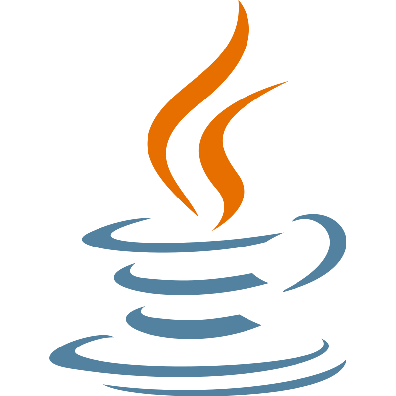
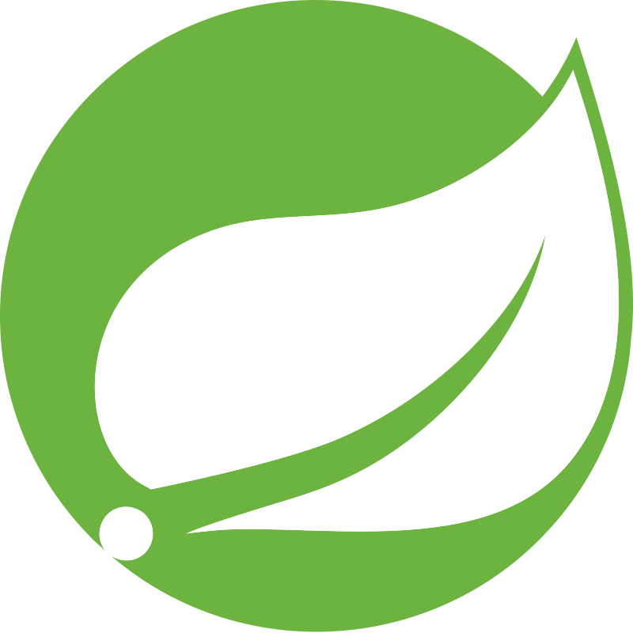
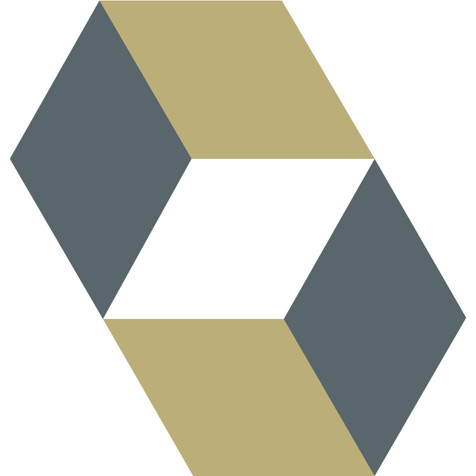
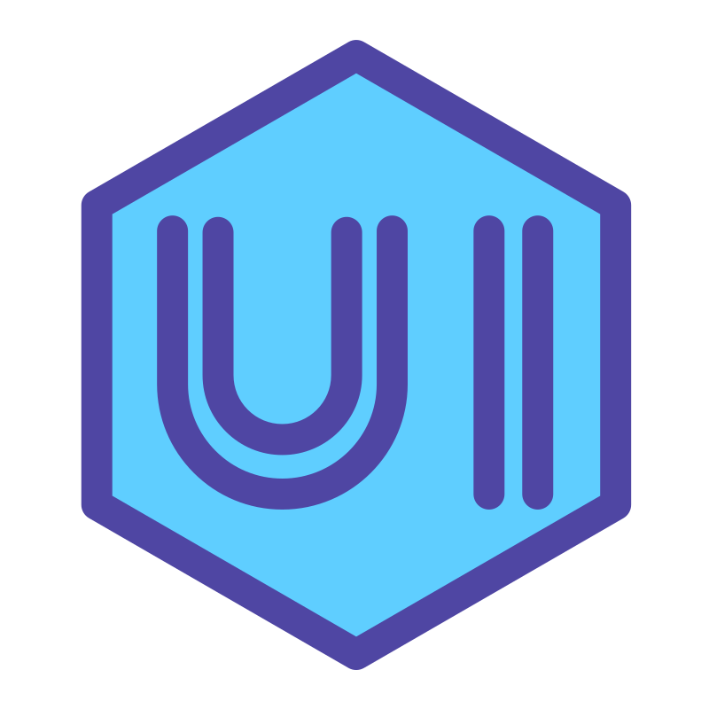
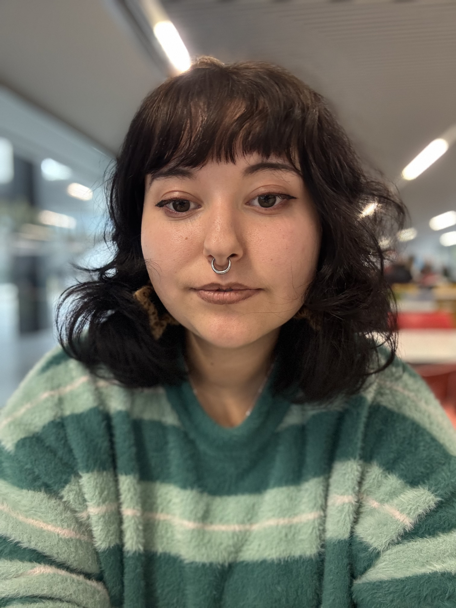
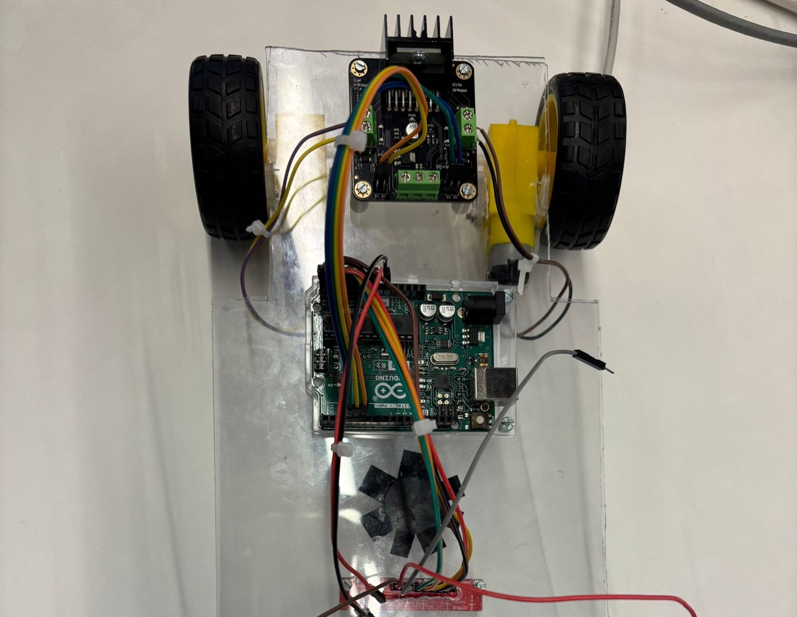

Habilidades
Lo que se hacer.

Java
Spring Boot
Hibernate
UI / UXDocker
Portfolio · DAM
Estudiante de Desarrollo de Aplicaciones Multiplataforma, apasionada por construir software con proposito. Premio Nacional de Robotica 2025. Cada linea de codigo es un paso mas.

Sobre mi
Desde pequeña siempre senti curiosidad por como funcionan las cosas. No fue hasta hace poco que descubri lo mucho que me apasiona la informatica — lo que empezo como un interes pasajero se convirtio en vocacion.
Estudio Desarrollo de Aplicaciones Multiplataforma y cada dia aprendo algo nuevo: desde logica de programacion hasta diseño de interfaces, pasando por bases de datos y arquitectura de software.
Fuera del codigo, soy monitora voluntaria de educacion no formal y apoyo iniciativas como STEM Girls para fomentar la presencia de mujeres en tecnologia. Cada error es una oportunidad de aprendizaje.
Habilidades

Java
Spring Boot
Hibernate
UI / UXTrayectoria
Trabajo en proyectos reales dentro del equipo de desarrollo. Sagunto, Espana.
ASTI Robotic Challenge 24/25 — Distincion a nivel nacional. Robot siguelineas programado en C++ con sensores infrarrojos y algoritmo de correccion propio.
Ensenanza de valores eticos, campamentos y actividades. Apoyo a la iniciativa STEM Girls para promover la inclusion de mujeres en tecnologia.
Ciclo formativo en Desarrollo de Aplicaciones Multiplataforma. Software, apps moviles, bases de datos y arquitectura de aplicaciones.
Mantenimiento de ordenadores, contratacion de servicios y atencion al cliente. Valencia, Espana.
Ciclo formativo en Sistemas Microinformaticos y Redes.
Proyectos

App gamificada para aprender Lengua de Signos Espanola (LSE) de forma gratuita y accesible. Sistema de XP, rachas, lecciones por niveles y diccionario visual construido con la comunidad sorda.

Robot siguelineas multifunción para el ASTI Robotic Challenge nacional. Programado en C++ con sensores infrarrojos sin librerias externas. Algoritmo de correccion propio de alta precision.

Aplicacion web interactiva para descubrir Valencia. Proyecto final intermodular de 1 DAM: rutas y lugares de la ciudad con contenido dinamico. Desplegada con Docker.

App fullstack para registrar y gestionar aventuras. API REST con Node.js, Express y MongoDB. CRUD completo con persistencia en base de datos.

Contribuidora - App Android (Kotlin)
Plataforma multiplataforma para gestion de talleres mecanicos. Mi parte: app Android en Kotlin con consumo de API REST. Integra backend Spring Boot y app de escritorio Electron. Proyecto final de 2 DAM.
Contacto
Estoy abierta a oportunidades, colaboraciones o simplemente a conocer gente del sector. No dudes en escribirme.